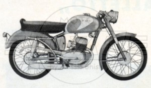
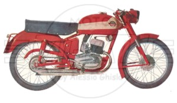
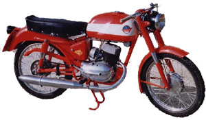
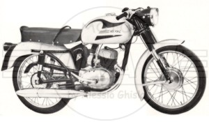
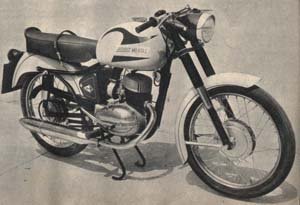
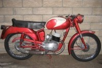

MODELLO "6 Giorni" (6G)
Sicuramente questo è uno dei modelli MI-VAL prodotti in maggior numero di
esemplari.
Il nome celebra le medaglie d'oro conquistate dalla casa nelle competizioni
denominate appunto "6 Giorni"
Personalmente suddivido la produzione in 3 serie principali.
All'interno di ogni serie ci possono poi essere alcune lievi differenze in
alcuni accessori.
Le date indicate di seguito sono indicative. Probabilmente la produzione di
serie è cessata a metà anni 60, ma il modello è stato commercializzato fino al
1968.
Ogni contributo informativo è ben accetto.
|
1^ Serie (1958 - 1959)  (da volantino pubblicitario)
|
2^ Serie (1959 - 1962)  (da volantino pubblicitario) La moto rappresentata dovrebbe essere quella presentata al motosalone di Milano del 1959. Si può notare la marmitta del tipo a coda di pesce, ma è possibile che in produzione si cominciò a utilizzare la marmitta a sigaro. Infatti gli esemplari conservati più vecchi che ho catalogato appartenenti a questa serie sono dotati di marmitta a sigaro.
 (fotografia di moto restaurata) |
3^ Serie (1962 - 1968)  (da volantino pubblicitario)
 |
|
|
|
SCHEDA TECNICA (versione
tratta da manuale uso e manutenzione 1960) MOTORE: Monocilindrico 2 tempi, alesaggio e corsa 52 x 58 mm Cilindrata effettiva 123 cc, potenza effettiva 6,5 CV a 5500 giri, rapporto di compressione 1:7,5 Velocità massima 85 km/h Carburatore Dell'Orto UB 20 BS con filtro aria silenzioso a recupero Accensione a volano magnete Cambio a 4 rapporti, trasmissione primaria ad ingranaggio, trasmissione secondaria a catena Frizione in bagno d'olio a dischi multipli TELAIO Forcella anteriore telescopica semiidraulica Sospensione posteriore a forcellone oscillante con ammortizzatore idraulico Ruota anteriore: 2,50 x 19 Ruota posteriore: 2,50 x 19 rinforzata Capacità serbatoio 15 litri Potenza impianto elettrico 30 W Consumo norme CUNA 2,85 litri/100 km Candela Marelli CW 225 LV |
L'angolo dei conservati

|